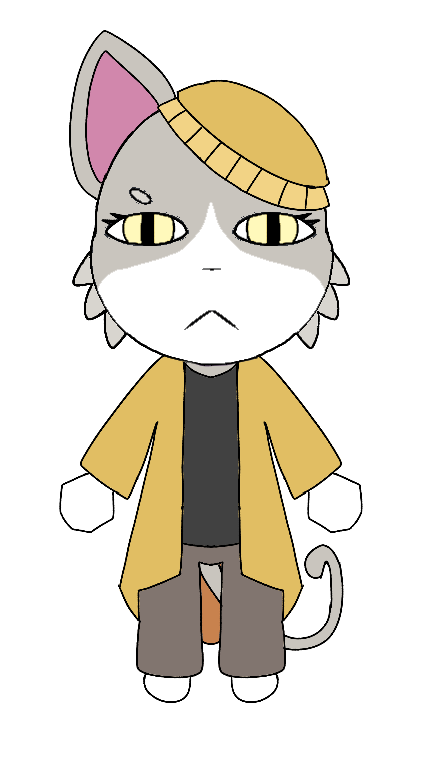

Character Database

| Espécie | Gata |
| Gênero | Feminino |
| Pronomes | Ela/Dela (She/Her) |
| Cargo | Paciente |
| Status | Viva |
| Primeira Aparição | Desconhecida |
| Consulta | Dra. White (Andar 2) |
Hollin é uma gata de pelagem clara com detalhes cinzentos, olhos amarelos e interior das orelhas rosa. Usa um chapéu amarelo, um casaco amarelo sobre uma blusa escura e calças marrons. Sua postura costuma ser tímida e reservada.
Hollin é uma paciente conhecida da equipe do hospital. Ela costuma falar baixo e demonstrar bastante timidez durante suas consultas. Geralmente chega com horário marcado para ser atendida pela Dra. White no segundo andar, passando primeiro pela recepção para realizar o check-in.